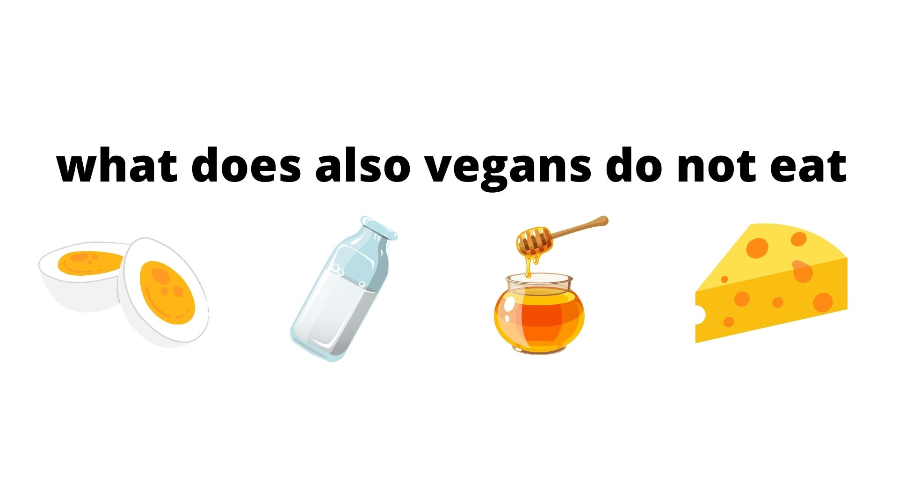

In science we include biology, physics and quimics wich are the main branches of this important subject, science help us to know how the world works and many important things of this.
What is the difference between vegetarism vs non-vegetarism?
In order to understand this great doubt and to be able to analyze the advantages and disadvantages of each one of them, we must understand what are the difference between both veganism and vegetarianism, many people could confuse these two by thinking that both of them are the same.
Vegetarian
The vegetarian are the ones that not consume animal product that become from their suffering / slaughter...
Vegetarians do not consume:
- Meat, such as beef, pork others
- Poultry, such as chicken, duck and more animal meet
- Fish and sea animals
Vegans
In the other hand we have vegans, vegans usually don’t use anything provided by animals talking about food, clothes and others...
 |
Vegans do not consume:
- Milk
- Cheese
- Butter
- Yoghurt
And other dairy products that includes meat and clothes that are provided by animals.
Vegetarism vs no vegetarism
Both of this styles have their advantages and disadvantages that can make you decide what style you would like to follow, but it is important to analyse and look after all the possible disadvantages that this habits will have on your body
Vegetarism
A vegetarian diet do not contain animal protein. A semi-vegetarian diet is an eating plan that contains some animal protein, but more plant-based foods, in the other hand vegetarian diet does not include any type of meat such as: poultry or shellfish and It is a meal is mostly composed of plants.
Advantages
- Prevents heart diseases.
- The carbohydrates are a very important source of energy
- help to lower blood pressure.
- It can be a cheaper diet.
- Helps the process of digestion
- There is less possibilities of diabetes.
- It is helpful for people with high cholesterol
- In a vegetarian diet it provides lots of vitamins and minerals
- Being a vegetarian will help you to lose weight and get a healthier weight
- Control of hypertension
Disadvantages
Vegetarism diet is poor in vitamin B12 that causes the person to feel sleepier during the day.
Excess carbohydrate consumption causes the metabolism to become slower
There are good fats that are essential for the lymphatic system to work better if there is a lack it can cause Low cholesterol levels
The vegetarian person is at risk of osteoporosis; this is because this diet has a lack of calcium and other minerals that are vital for the skeletal system.
Anemia, it is caused by a lack of iron in the blood and one of the foods that contains it is meat
Hair loss, Protein helps maintain good hair health, deficiency of this can develop alopecia among others
Some studies show that vegetarians are more likely to suffer from depression due to absence of zinc
That the restriction of certain foods can result in sexual laziness
No vegetarism
The non-vegan diet that can be related with the regular diet of human that contains meet; The body needs certain basic nutrients to function properly.
For example, the sugars present in carbohydrates are very useful for energy, and the fibers are necessary for having a better digestion.
As same as proteins and fats found in meat, fish, chicken are necessary for muscle building and repair, as well as the maintenance of the entire body.
Advantages
- It is a source of vitamin B12 that helps us to metabolize proteins, form red blood cells and keeping up the central nervous system healthy.
- It is rich in zinc, which helps to protect us against oxidative damage, to preserve the skin and to create hemoglobin.
- Provides iron, that is a very important element to maintain the adequate oxygen transport in our blood and entire body
Disadvantages
- Non-communicable diseases such as cancer, obesity and others
- Risk of colorectal cancer
- Risk of contract Salmonella, Campylobacter, E. coli
To sum up both of this “life styles” are quite good, if you know how to control and not overeat food that can cause health problems in the future, you have it all; everything must be controlled and you need to take into account the consequences that this can bring in your life because, not only the excess is bad the lack is also very bad for health too, so you just need to keep a balance in your alimentation in order to insure your health